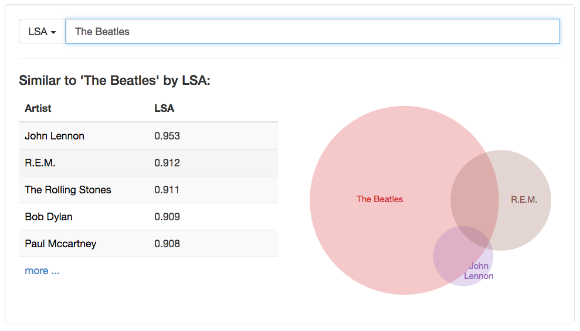

Hello World
CodeTengu Weekly 碼天狗週刊
CodeTengu Weekly 會在 GMT+8 時區的每個禮拜一早上 10:00 出刊，每一期會從目前的 curator 名單中選出三位來負責當期的內容，每一位 curator 各自負責不同的領域，如果你在這一期沒有看到自已感興趣的東西，說不定下一期就會有了。
你也可以瀏覽一下前幾期的內容，有價值的東西是不會過時的。
以下是目前的 curator 陣容：
- @vinta - I failed the Turing Test - 喜歡科幻小說，最近在讀「銀色新生」
- @saiday - Imnotyourson - 捷運飲食推廣委員會
- @tzangms - Oceanic / 人生海海 - 衝動型購物
- @fukuball - ImFukuball - 徵 Android 工程師，意者內洽
- @wancw - 繼續寫 LeetCode 可能會生出一套 Unit Test 框架
- @mingderwang
- @kako0507 - 熱愛嘗試新事物的前端工程師
- @chiahsien - Nelson
- @hiroshiyui - 非典型司書
- @uranusjr - Smaller Things - 聽說這是技術週刊，可是我不愛談技術怎麼辦
- @kkdai - 態度萬歲 - 喜歡 Golang 的略懂工程師
大家也可以 follow 一下 CodeTengu 的 Facebook、Twitter 或 GitHub，有很多 Weekly 看不到的內容。有任何建議或疑問也可以來 Gitter 聊一聊，歡迎亂入 👺
 @fukuball
@fukuball
理解 Dependency Injection 實作原理，以 PHP 為例
PHP、Programming：中級
當系統越來越龐大複雜時，會慢慢發現程式之間的依賴關係越來越重，不僅使得程式漸漸沒有修改的彈性，也會造成程式無法很容易地被測試。這時我們可以使用依賴注入（Dependency Injection）這個技巧來減低程式之間的藕合性。
本篇文章用 PHP 撰寫了一個簡單的例子來說明怎麼做到依賴注入，並介紹了實務上會在大型系統使用 DI 容器來更容易地做到依賴注入，不過記得現在已經有許多 Framework 有提供很好的 DI 容器，就不需要自己再自幹一個了，這篇文章是為了幫助初學者更容易地了解 DI 的概念，如果看完文章你還是覺得一知半解，那可以看看這個生動的影片幫助了解。
MySQL 5.7 Introduces a JSON Data Type - 簡介 MySQL 5.7 的 JSON Data Type
MySQL：初級
其實我個人蠻喜歡寫 SQL 的，比起使用 ORM 提供的 Query Builder，總是覺得 SQL 一次 Query 出想要的資料省事多了，而 MySQL 5.7 推出的新 Feature - JSON Data Type 可能又會讓 SQL 變得更好用，所以好好磨練一下寫 SQL 的技巧還是非常重要的。
JSON Data Type 的使用時機是在你需要一些比較不需要結構化的資料時可以考慮使用，比如像是標籤、可有可無的 metadata 等等，這些資料設成自己一個資料表像割雞用牛刀，設成自己一個欄位又會造成資料表中這些欄位的資料很稀疏，這時我們就會想要用一個 JSON 文件存在一個欄位就好了。
但僅僅將 JSON 用 String 存到資料表，並無法很簡易的 Query 出資料，而且也不能很簡易的操作資料，可能都需要先將資料撈出來之後，再用程式語言對 JSON 做操作，簡直是找自己麻煩。但如果是存成 MySQL 5.7 的 JSON Data Type，MySQL 提供了許多方法可以在 SQL Query 中操作 JSON 欄位的資料，瞧瞧這個 Query：
SELECT name, profile->"$.direct_reports" reports, profile->"$.salary" salary FROM people WHERE profile->"$.direct_reports" >= 10;
很方便就可以把資料欄位的 JSON 文件當條件來查詢啊！感覺超棒的！

Finding Similar Music using Matrix Factorization - 利用矩陣分解來推薦相似音樂（藝人）
Machine Learning：中級
本篇文章展示了如何使用矩陣分解方法來快速做到相似音樂（藝人）功能，首先作者先使用了 LSA 這個矩陣分解方法，LSA 是 Latent Semantic Analysis 的縮寫，字面上的意思就是「潛在語意分析」，當你要分析兩個資料之間有沒有什麼潛在的語意關係（比如同意字、資料間的相似性），都可以使用這個矩陣分解方法來分析。不瞞各位說，本宅的研究論文就是使用了 LSA 來分析歌曲於歌詞之間的情意相似性，用以對歌曲推薦情意相似的歌詞，或是反過來用歌詞推薦情意相似的歌曲。
不小心講了太多本宅的事，言歸正傳，本篇文章寫得言簡意賅，首先作者先利用使用者播放藝人歌曲建立藝人與使用者之間的關係矩陣，然後對這個矩陣進行 LSA 分解。LSA 需要指定參數說要將矩陣分解成幾個主要因子，作者選擇了 50 個因子，如此可以得到藝人跟 50 個因子的關係矩陣，以及使用者跟 50 個因子的關係矩陣。其實藝人跟 50 個因子關係矩陣的潛在意義就是藝人受到使用者歡迎的原因因子，它是抽象的，但大家可以想成藝人因為這 50 個因子，能夠與使用者關係矩陣線性組合成原本的播放矩陣，這 50 個因子造就了使用者如何播放藝人的音樂。
得到 50 個因子的關係矩陣之後，每一個藝人都可以表示成 50 維的向量，我們就可以使用 cosin similarity 來計算每個藝人的相似程度（潛在意義就是被使用者播放的相似情況），大家可以看一下作者提供的一些結果，像是 The Beatles 推薦出 John Lennon、Paul Mccartney，真的還蠻準的。然後作者又進一步做了一些調整，因為從使用者播放藝人音樂的關係，我們可以定義這是種喜歡藝人音樂的關係，但如果使用者都不放某位藝人的音樂，那是否就代表了是一種不喜歡的關係，為了嚴謹的計算這樣的關係，他使用了 Collaborative Filtering for Implicit Feedback Datasets 提出的方法來做到這點，作者有提供相關 Source Code，大家有興趣可以去玩玩看噢～
林軒田教授機器學習基石 Machine Learning Foundations 第十五講學習筆記
Machine Learning：初級
在上一講中我們學習了如何推演正規化演算法來避免 Overfitting 的發生，總結前面所有的演算法加上正規化的技巧，我們會發現各種學習演算法都有一些參數需要去做調整，但到底要怎麼挑參數才能得到最好的效果呢？這一講中介紹了 Cross Validation 這個技巧來幫助我們選擇合適的參數，比起自己憑感覺挑參數客觀許多，在理論上也證明未來預測的效果會接近 Cross Validation 測試出來的結果，這是學會機器學習這門學問相當重要的一個技巧。
 @mingderwang
@mingderwang
用 docker 來玩 GPU
怎麼可能? Docker 不是用來分享 CPU 或記憶體資源的嗎, 怎麼可以用 Docker 來玩 GPU 呢? 答案是: 兩年前就已經有很多人在繪圖卡上試過 Docker 了。還比較過在 Docker 裡跟 Docker 外執行 CUDA 效能相差多少。現在 nVidia 也推出官方版 CUDA Docker images, 想在 Docker 裡玩 GPU 的人, 可以 Docker pull 下來, 直接使用。
一定有人會問, 繪圖卡不是只能用來打 games 的嗎? 為何還要支援 Docker? 如果你也這麼認為, 那你就大錯特錯了。最近不是流行 Machine Learning 或 Deep Learning 嗎? 用 GPU 可以讓運算速度快上百倍。加上 Docker 可以幫你解決很多安裝 drivers 的問題, 再加上官方版 nVidia Docker image 還提供內建 cuDNN - Deep Neural Network 附程式庫, 可以讓你事半功倍, 很快成為用 Docker 跑 Deep Learning 處理 Big Data 的資料專家。
Automating your development environment with Ansible
每次有 RD 新進人員報到, 最高興的是又可以採買新電腦或筆電給這位新員工。但頭痛的是, 又要重新安裝一個跟其他 RD 一模一樣的開發環境給他, 不管是誰裝, 幾乎都要耗掉一天的時間, 而且還未必能用。
所以最好的解決方法就是, 自動化安裝你的開發環境。Ansible 也許是個人安裝自己筆電最簡單的方法, 不必像 Chef 或是 Puppet 還要安裝 server, 或是用 push pull 的模式才能使用。Nick Hammond 這篇文章只是一個範例, 它用 Ansible 就能在 Mac 上安裝 Ruby 的開發環境, 還順道幫他架設 pow, MySQL 和 Elasticsearch, 並且能確保跟其他工程師一模一樣的開發環境。最棒的是, 這個設定只要做一次, 以後就輕鬆了。
 @kkdai
@kkdai
Go best practices, six years in (學習 Golang 六年後，這裡有些秘訣)
作者分享學習 Golang 六年後（喔！一開始就學) 的一些實際演練上的好範例．
Development environment (環境的設定)
- 建議把
$GOPATH/bin(其實也就是我們常說的$GOBIN加入你的$PATH這樣做任何事情都會相當方便．
- 建議把
Repository structure (專案的檔案組織架構)
- 如果你的套件是執行檔 （舉例: 臉書相簿小幫手 :p ) 把執行檔寫在主要目錄下，你其他函式庫寫在套件資料夾中．
- 如果你的套件是函式庫 ( 舉例: CoAPMQ ) 就把相關執行程式的部分 ( server 或是 client 或是其他 CLI 工具) 寫在資料夾中．
Formatting and style (關於 Coding Style 部分)
- 不論你使用 gofmt 或是 goimport 他的 style 都是正確的，但是作者也建議你應該要參考 Andrew Gerrand 命名的建議
Configuration ( 有效的參數設定)
- 作者建議如果要使用
flag.Parse()，建議放在func main()因為這樣最直覺也最清楚．並且把所有的設定變數都在該地方存取好當作參數傳到各個函式．
- 作者建議如果要使用
Program design (針對物件設計的討論)
- 如果要起始一個物件( ex: foo )，比較建議的方式不是直接拿結構(
new(foo)) 來用，而是使用建構函數NewFoo()． - 有其他針對該物件的設定，可以當作建構函數的輸入參數．這樣在
NewFoo()裡面可以有效地避免疏忽的初始化．比如說map沒有初始化，變數初始化．
- 如果要起始一個物件( ex: foo )，比較建議的方式不是直接拿結構(
Logging and instrumentation ( 關於 Logging )
- 關於 Logging 的小技巧，以下幾個都還蠻有用的:
- Logging 只需要紀錄意外狀況．
- 避免太多的 Logging Level ，很多時候使用 Info 跟 Debug 已經很足夠．
- 使用結構性的 Logging 套件，比如說 go-kit/log
- 關於 Logging 的小技巧，以下幾個都還蠻有用的:
Testing (關於測試)
- 測試只測試需要被測試的部分．比如說你要測試一個空值，就不要測試極大值與極小值的部分．
Dependency management ( 套件相依管理 )
- 這大概算是很困難的部分，不過作者也建議幾個相依套件可以給大家參考． （比如說我也很推薦的 govendor )
Build and deploy (編譯跟部屬方面)
- 作者建議使用
go install而不要使用go build，因為它不僅僅會把相依套件都安裝好．也會把可編譯的執行檔一併複製到$GOPATH/bin的目錄下．
- 作者建議使用
這篇介紹有點長，不過很推薦大家好好研讀一下本文．
goserv - A lightweight toolkit for web applications in Go
不少人一直都在詢問有沒有好的 #Golang Web toolkit ，這個 goserv 看起來還不錯．剛剛在 05/03 達到 1.0 正式版的 goserv 提供以下的功能:
- Fast & Lightweight
- Flexible Routing
- Centralized Error handling
- 跟原生 net/http 是相容的
並且可以很快速的架設 File Server，也可以很快速地透過 MongoDB 架設 REST Server 大家可以看看有沒有符合需求
[podcast] Go on the Cloud with Andrew Gerrand and Chris Broadfoot
昨天才剛上架最新一期的 Google Cloud Platform Podcast 請到了兩個大神:
Andrew Gerrand: 身為 Gopher 你很難沒聽過這個名字，就是 Golang 的創始團隊之一，並且專注在 Golang 使用者經驗上的持續推廣．
Chris Broadfoot: 去年加入 Go 跟 Google Cloud Team 的 Chris 主要是負責 Go App 在 Google Cloud Platform 上面的開發．
裡面有談到為何 Golang 受歡迎？ 為何幾乎所有重要的雲端的開發系統( Docker Kubenetes ) 都使用 Golang 作為開發語言．
很推薦一聽....
此外: 主持人是有來台灣參加 Golang Taiwan 的 Francesc Campoy 跟 Google Cloud team 的 Mark Mandel
google/zoekt: Fast trigram based code search
Zoekt ( 唸成 "zooked" ): Fast trigram based code search by Google"
背景介紹: 這是 Google 官方釋出的 trigram based code search tool ，其實之前 Russ Cox 就有寫過類似概念的東西（並且支援 REGEX)
如果想簡單的瞭解 Trigram 是如何在 code search 中運作，可以看小弟我之前的簡單介紹文章
kovetskiy/manul 透過 git submodule 來方便達成 Go Vendoring 的工具
Go 1.6 之後已經預設將實驗性質的 Vendor (也就是相依套件管理功能，更多資訊請參考 Wiki ) 功能當作預設打開了．那麼該如何有效地使用 Vendoring 呢? 不論是透過 Godep 或是透過 GoVendor 都會複製一整份套件原始碼在你的 Golang Repo 下．難道沒有更好的方式嗎？
manul 就是一個這樣的工具，他使用 git submodule 的概念來實作．將每個相依的套件當作是 submodule 來管理，這樣一來不僅僅可以減少許多的 Repo 空間，也可以更有效地做套件版本的控管． 並且 git submodule 本身就支援 go get．
還在煩惱套件管理嗎？ 不仿試試看這個工具吧．
工作機會
Random Cool Stuff
來動手玩玩 Amazon Echo 吧 ？ 透過 Raspberry Pi 來模擬 Amazon Echo，並且開發個人化的 Alexa Skill
上週的 Random Cool Stuff 有提到透過 Amazon 藍芽喇叭語音控制設備 Echo 來控制你的電動車 Telsa S ．那麼本週就讓我們來動手透過 Raspberry Pi2 做一個 窮人版 開發者版本的 Amazon Echo 吧?
這一篇文章整理了一些文章列表，並且敘述該如何從 Raspberry Pi 2 的設定到建立自己的開發版本的 Amzon Echo ，甚至到架設自己的伺服器與 AWS Lambda 的部分．來開發個人化的 Alexa Skill ( 也就是 Amazon Echo 上面的 App )
其實 Amazon 所提供的手把手說明文件相當的清楚，但是可能會有些問題發生的時候不知道該如何去檢查．作者提供了一些簡單的檢查方式．希望能幫助大家儘快的開發出自己的 Amazon Echo 客製化技能．
Post by @kkdai